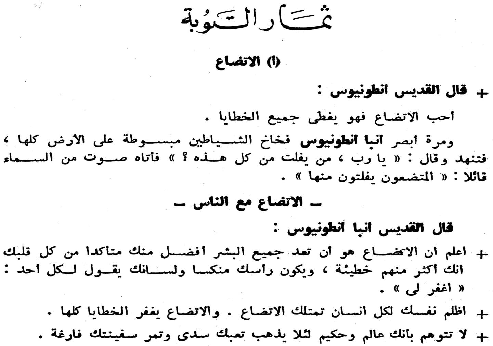
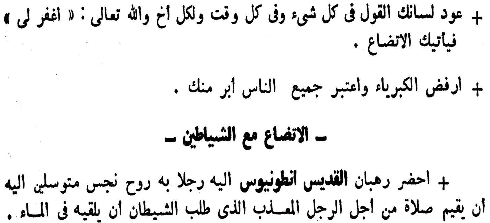

68 أمور فى خبرتهم لعدم األقباط القباطنة على أساسى بشكل اعتمدوا العرب وأن ،البحرى ألسطولهم عام البيزنطى االسطول على العرب انتصار أن الطبرى المسلم المؤرخ ويقرر ،"البحر 715 ميالدية األق البحارة تكامل بفضل كان .السيوف حملة المسلمين والمحاربين باط قام الذى أن كما،هيرو يدعى عبقرى رجل اخترعه بالبخار يعمل موتور أول للعالم األقباط قدم وقد المراجع أهم من النقاوى يوحنا كتبه الذى الطبى المرجع وكان ،قبطى طبيب هو النفيس ابن بتدريب طبى علمى عمل أول أن كم ،العرب عند الطبية اهرون لمؤلفه أيضا لقبطى هو بالعربية مكتوب "كان الطبية للمعرفة ظمأنا نروى كيف " بعنوان كتابا كتب الذى الماجد ابن المفضل أن كما،السكندرى .قبطيا بجامعة والباحث واالمريكية الملكية الجراحين كلية زميل عبيد مكرم أمين الكبير لألستاذ خالصة تحية والذى ،سابقا هارفارد فى والوالدة النساء أمراض مؤسس باشا محفوظ نجيب العظيم جده تواضع حمل فى القبط تراث من الكثير جمع الذى باشا سميكة لمرقس خاصة وتحية ،الحقيقية المسيحية وأخالقه مصر عام القاهرة فى أسسه الذى القبطى المتحف 1908 سولاير عزيز الكبير المصرى للعالم خاصة وتحية ، ال عطية من اكثر جمع ذى 200 الموسوعة ذلك بعد لينشروا العالم حول القبطيات فى متخصص عالم فى العظيمة القبطية 8 فى عمره أفنى الذى مفتاح راغب الفاضل الراحل لألرخن خاصة وتحية ،مجلدات بالقا األمريكية الجامعة مع بالتعاون موسيقية نوت فى ودونها القبطية الموسيقى من الكثير جمع وتحية،هرة للعالم خاصة وتحية ،بالقاهرة القبطية األثار جمعية مؤسس غالى بطرس ميريت الراحل للوزير خاصة وتحية،بكاليفورنيا كليرمونت بجامعة القبطيات قسم وراعى مؤسس سعد ميخائيل سعد الدكتور المصرى العا فى الكبرى المدن أحدى فى يعقد والذى للقبطيات الدولى للمؤتمر خاصة وتحية ،سنوات أربع كل لم القبطية الدراسات عن علميا سنويا مؤتمرا تعقد والتى بكاليفورنيا شنودة القديس لجمعية خاصة بجامعة صادق أشرف للدكتور خاصة وتحية ،القبطية الدراسات فى االبحاث أحدث لمناقشة كاليفورنيا جنوب ب القبطية الدراسات عن محترمة دورية ينشر الذى بباريس لعالم خاصة وتحية ،"األقباط "عالم أسم لتدريس ومصر واستراليا امريكا بين يتنقل الذى جبرة جودت الدكتور المعروف القبطية الدراسات .الفرعونى المصرى القبطى شعبه تراث على الحفاظ فى يساهم من لكل خاصة وتحية ،القبطيات Quelle: http://www.elaph.com/Web/ElaphWriter/2009/12/510083.htm
St. Markus · 2010 · Deutsch
تأثير األقباط فى الحضارة-
Ausgabe 1 · Seite 68

